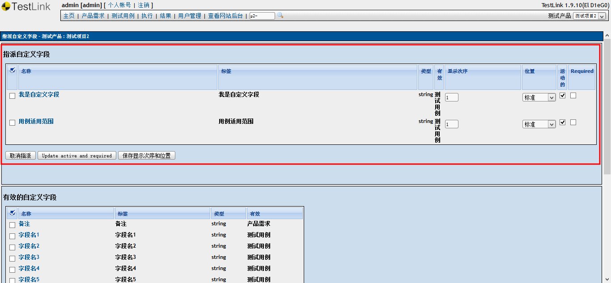

1、首先查看自定义字段是否已经分配到【测试用例】，点击【编辑测试用例】（如果要查看的对象是需求，那么点击【产品需求规格】）。
2、在过滤器中查看是否有需要的字段。如果有，说明字段已经被分配过了，不用再次创建和分配。如果没有，那么按以下步骤进行创建和分配。
3、点击【自定义字段管理】（如看不到该项，请联系管理员）。
4、点击【创建】
5、填写好自定义字段的内容，建议【名称】和【标签】一致，填写完毕后点击【增加】。
6、在自定义字段中可以看到已经添加成功了。
7、创建好了自定义字段，接下来要将它指派给项目。点击【指派自定义字段】。
8、选择到需要指派出的自定义字段，点击【指派】。
9、可以看到该页面上增加了指派的字段，自定义字段指派成功。
